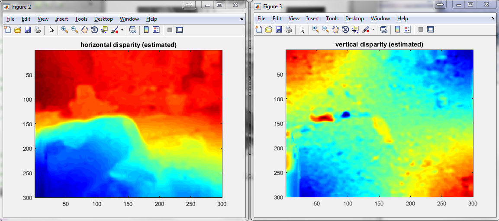

This is the readme for the Matlab code associated with the paper: M. Chessa and F. Solari. A Computational Model for the Neural Representation and Estimation of the Binocular Vector Disparity from Convergent Stereo Image Pairs. International Journal of Neural Systems, 28, art. no. 1850029, 2018 DOI: https://doi.org/10.1142/S0129065718500296 This code was contributed by Manuela Chessa and Fabio Solari. To run an example, simply type demo on the Matlab command prompt after cd'ing to the folder that contains demo.m after a minute you should see the following images that are similar to the ones in Fig. 3 (first row) of the paper: 